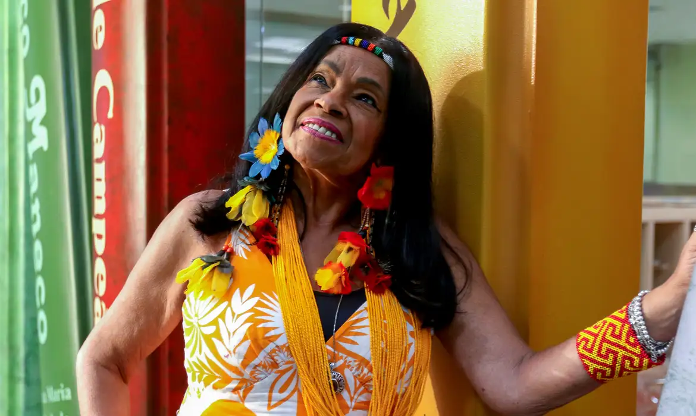
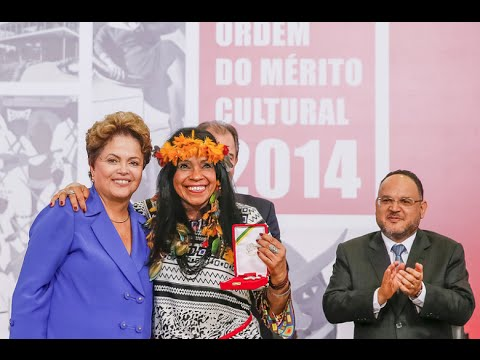
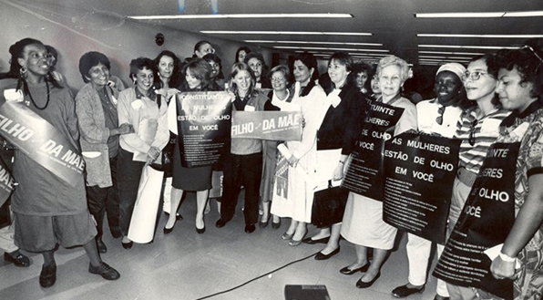
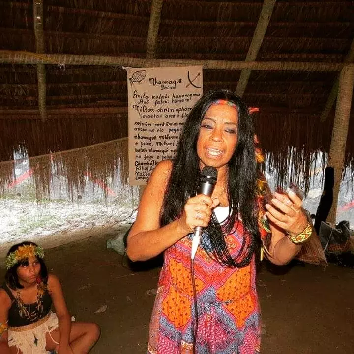
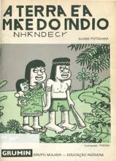
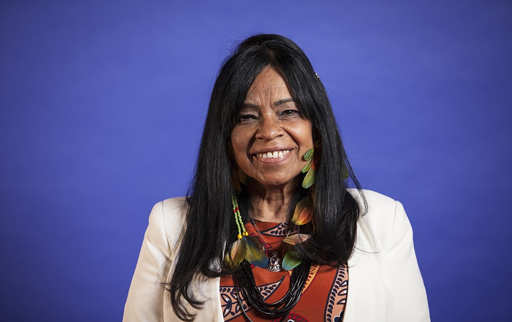
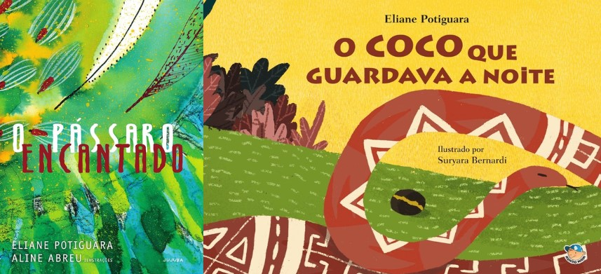

Eliane Potiguara
"Estar em estado de liberdade é estar em estado de existência na paz, mas só se consegue esse estágio quando a luz interna está acesa, límpida e conectada com a verdade, sabedoria, compromisso, tolerância e respeito ao próximo."
BIOGRAFIA
Eliane Potiguara nasceu em 29 de setembro de 1950, no Rio de Janeiro. Ela é uma escritora indígena, professora, poeta, contadora de histórias, mãe e avó, com raízes na etnia Potiguara. Fundou o GRUMIN (Grupo Mulher-Educação Indígena) em 1988 e é uma das fundadoras do ECMIA (Enlace Continental de Mujeres Indígenas).
Eliane foi nomeada para o Projeto Mil Mulheres para o Prêmio Nobel da Paz e, em 2014, foi agraciada com a Ordem ao Mérito Cultural pelo Ministério da Cultura.
Graduada em Letras (Português-Literatura) com habilitação em Educação pela Universidade Federal do Rio de Janeiro (UFRJ) e especializada em Educação Ambiental pela Universidade Federal de Ouro Preto (UFOP), Eliane tem participado de diversas palestras sobre Direitos Indígenas organizadas pela ONU e por outras instituições, tanto no Brasil quanto no exterior.
Em 1988, Eliane foi reconhecida como uma das "Dez Mulheres do Ano" pelo Conselho das Mulheres do Brasil, em virtude de seu papel na criação do GRUMIN, a primeira organização de mulheres indígenas do Brasil. Seu trabalho foi crucial para a integração das mulheres indígenas nas esferas social, política e econômica, além de ter contribuído para a formulação da Constituição Brasileira de 1988.
Em 1990, Eliane foi a primeira mulher indígena a apresentar uma petição no 47º Congresso dos Índios Norte-Americanos, no Novo México, com mais de 1.500 participantes. Sua atuação foi fundamental na elaboração da "Declaração Universal dos Direitos Indígenas" na ONU, em Genebra. Por seu compromisso com os direitos indígenas, recebeu o título de "Cidadania Internacional" em 1996, concedido pela filosofia iraniana Baha’i, que preza pela paz mundial.
Eliane desenvolveu uma cartilha de alfabetização indígena com base no método de Paulo Freire, com apoio da Unesco.
Como defensora dos direitos humanos, Eliane Potiguara organizou vários eventos e criou o primeiro jornal indígena, além de boletins informativos de conscientização. Em 1991, coordenou um encontro histórico de mais de 200 mulheres indígenas em Nova Iguaçu/RJ, com a participação de Baby do Brasil e outros líderes. Ela também promoveu cursos sobre saúde e direitos reprodutivos das mulheres indígenas e foi consultora em vários eventos relacionados a esses temas.
Em 1992, cofundou o Comitê Inter-Tribal 500 Anos durante a Conferência Mundial da ONU sobre Meio Ambiente.
Ela representou os direitos indígenas em diversos fóruns nacionais e internacionais, discutindo políticas e estratégias econômicas. Em 1999, participou do fórum sobre o Plano Piloto para a Amazônia, realizado em Luxemburgo, e atuou em mais de 56 fóruns internacionais e 100 nacionais, incluindo a Conferência Mundial contra o Racismo na África do Sul em 2001 e em Paris em 2004.
No final de 1992, Eliane foi premiada pelo PEN CLUB da Inglaterra, com apoio do Fundo Livre de Expressão dos EUA, por sua luta refletida no livro “A Terra é a Mãe do Índio”. Nessa época, ela e o jornalista Caco Barcelos (“Rota 66”) foram citados no Jornal Nacional como "Marcados para Morrer" por denunciarem violações aos direitos humanos e indígenas.
Em 1995, na China, durante o Tribunal das Histórias Não Contadas e Direitos Humanos das Mulheres na Conferência da ONU, Eliane narrou a trajetória de sua família, que migrou da Paraíba nos anos 1920 devido à violência dos colonizadores. Ela descreveu os impactos dessa violência na dignidade de seu bisavô, Chico Solón de Souza, e seus descendentes.
Nos anos mais recentes, Eliane atuou como Conselheira da Fundação Palmares/Minc, é FELLOW da organização ASHOKA e continua liderando o GRUMIN. Ela também é membro do Women’s Writers World.
Desde 2000, Eliane participou de inúmeros seminários, bienais, feiras literárias e eventos em universidades, escolas e instituições culturais no Brasil. Entre 2000 e 2018, esteve presente em diversas feiras e eventos literários.
Em 2011, foi nomeada Embaixadora Universal da Paz em Genebra.
Em 2012, lançou o livro infantil “O Coco Que Guardava a Noite”, seguido de “O Pássaro Encantado” em 2014.
Em 2018, seu livro "Metade Cara, Metade Máscara" foi adotado pelo projeto “Mulheres Inspiradoras”, coordenado pela professora Gina Vieira Pontes, com mais de 1.000 exemplares distribuídos em escolas de Brasília e Mato Grosso do Sul.

Eliane foi homenageada em 10 de janeiro de 2024 pela Maurício de Sousa Produções (Turma da Mônica) no Projeto Donas da Rua.
Esta é a biografia de Eliane Potiguara, uma das mais influentes vozes indígenas do Brasil, é uma escritora, educadora e ativista indígena, conhecida por sua luta pelos direitos dos povos indígenas, especialmente das mulheres. Fundadora do GRUMIN e participante de fóruns internacionais, Eliane tem contribuído para a preservação das culturas indígenas e a promoção da justiça social. Sua trajetória inclui diversas premiações, publicações literárias e um forte compromisso com a educação e os direitos humanos.